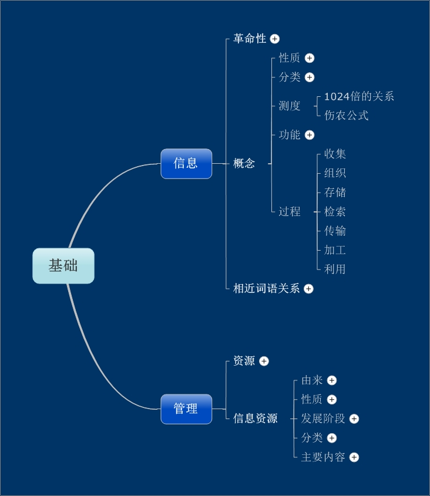

<div style="color:blue" align=center>信息资源管理第一章——提纲挈领</div><br><div id="article_content" class="article_content tracking-ad" data-mod="popu_307" data-dsm="post">

<p><strong><span style="font-size:18px">&nbsp; &nbsp; &nbsp; 信息资源管理第一章是总体的介绍，就是米老师说的，要先认识地图才能在沿途自由欣赏风光，第一章就是提纲挈领的一章！</span></strong></p>
<p><a href="http://www.kuaipan.cn/file/id_39320996825530537.html" target="_blank"></a><br>
</p>
   
</div><div class="ArcitleLink"><a href='http://blog.csdn.net/xvshu/article/details/7399209'>原文链接</a>